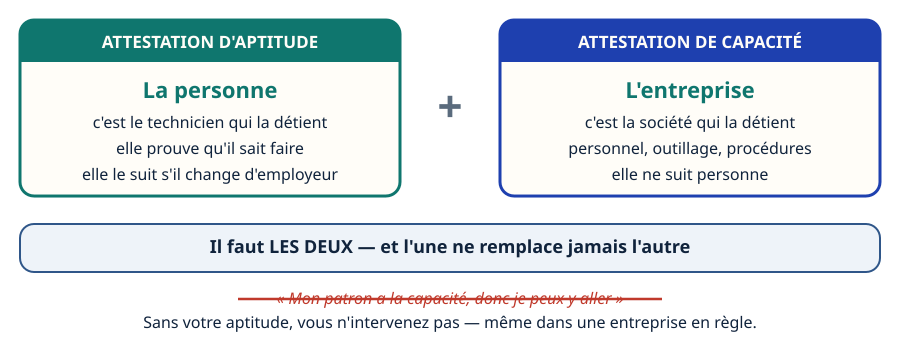
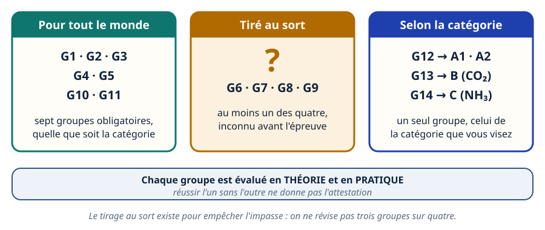
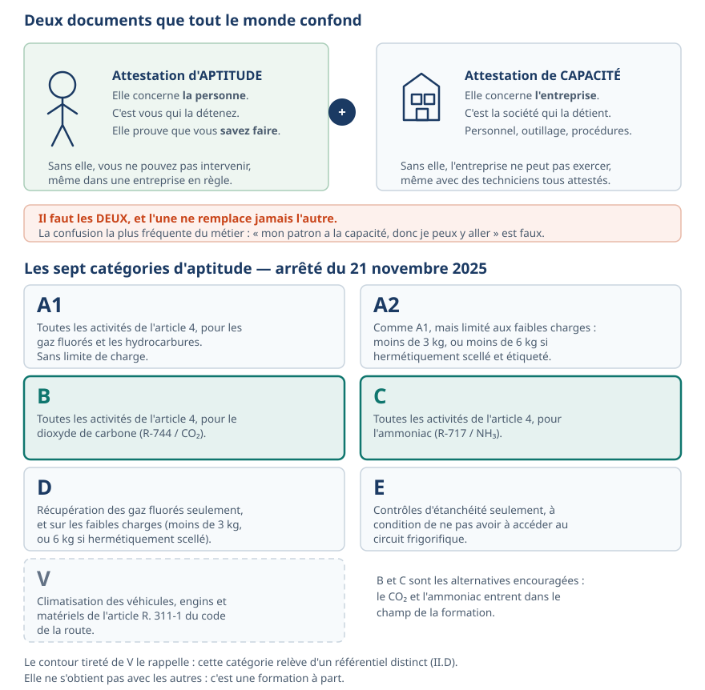
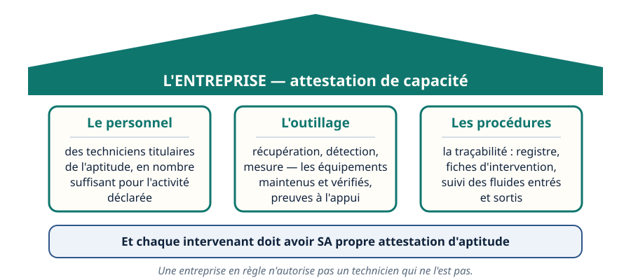
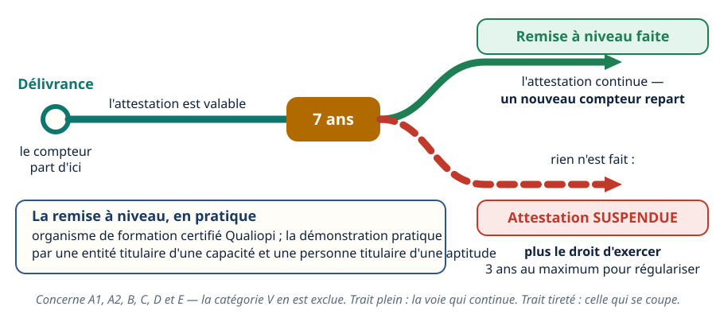
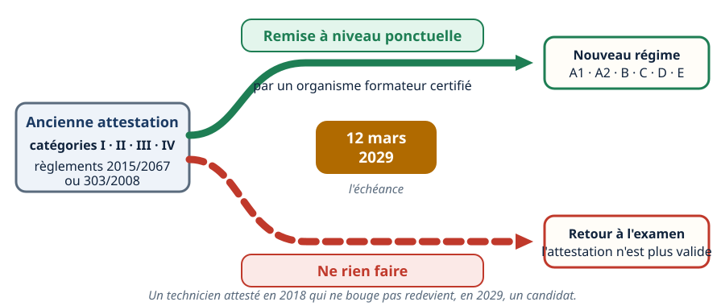
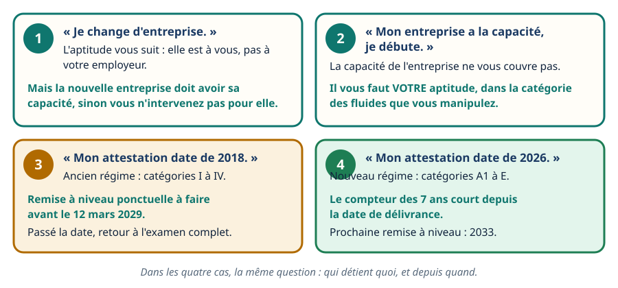
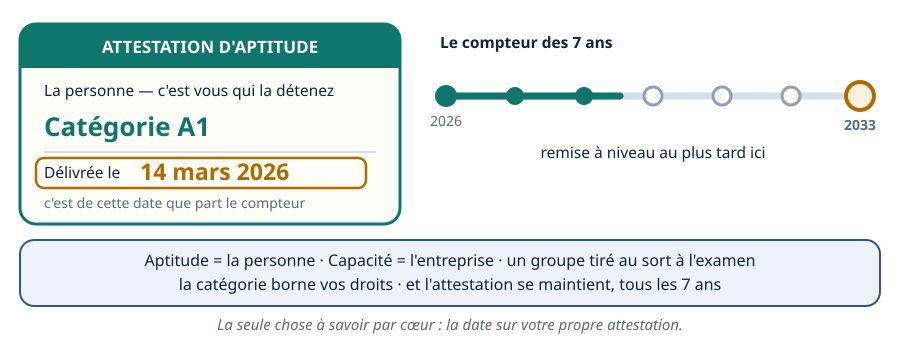

Fluidique & thermique · niveau BTS
Aptitude & capacité — qui a le droit de toucher
Mini-station commentée · 8 écrans et 4 questions · environ 10 minutes
À la fin de la station, vous savez distinguer aptitude et capacité, dire qui détient quoi, situer votre catégorie, expliquer comment l'aptitude s'obtient — et surtout qu'elle se maintient : depuis 2025, elle n'est plus acquise à vie.
Chaque écran peut être expliqué à voix haute : le bouton « Écouter » commente ce que vous voyez. Rien n'est dit qui ne soit aussi écrit.
Écran 1 sur 8
Deux papiers, deux titulaires
L'attestation d'aptitude concerne la personne : c'est le technicien qui la détient, elle prouve qu'il sait faire. L'attestation de capacité concerne l'entreprise : elle prouve que la société dispose du personnel, de l'outillage et des procédures.
Il faut les deux, et l'une ne remplace jamais l'autre. C'est la confusion la plus fréquente du métier : « mon patron a la capacité, donc je peux y aller » est faux. Sans aptitude, vous ne pouvez pas intervenir — même dans une entreprise parfaitement en règle.

Écran 2 sur 8
Comment l'aptitude s'obtient : pas d'impasse possible
L'évaluation croise une partie théorique et une partie pratique, sur des groupes de compétences :
- des groupes obligatoires pour tout le monde : G1, G2, G3, G4, G5, G10, G11 ;
- au moins un groupe tiré au sort parmi G6, G7, G8 et G9 — et le candidat ne sait pas, avant l'évaluation, sur lequel il sera interrogé ;
- un groupe spécifique à la catégorie visée : G12 pour A1 et A2, G13 pour B (le CO₂), G14 pour C (l'ammoniac).
Ce que le tirage au sort veut dire : impossible de réviser trois groupes sur quatre en espérant passer entre les gouttes. Le dispositif est conçu pour ça.

Écran 3 sur 8
Les sept catégories : laquelle vous concerne
Six catégories couvrent le froid fixe — A1, A2, B, C, D, E — et une septième, V, la climatisation des véhicules, relève d'un référentiel distinct.
Le point à retenir pour un BTS : la catégorie borne ce que vous avez le droit de faire, pas votre niveau de diplôme. Un titulaire E ne peut que contrôler l'étanchéité, à condition de ne pas avoir à accéder au circuit. Un titulaire D ne peut que récupérer, et seulement sur les faibles charges.

Écran 4 sur 8
La capacité : ce que l'entreprise doit prouver
Trois piliers, et ils se contrôlent :
- Le personnel — des techniciens titulaires de l'aptitude, en nombre suffisant pour l'activité déclarée ;
- L'outillage — les équipements de récupération, de détection et de mesure, maintenus et vérifiés ;
- Les procédures — la traçabilité des interventions et des fluides.
Une entreprise sans capacité ne peut pas exercer, même si tous ses techniciens sont attestés. La réciproque est vraie : l'entreprise capable n'autorise pas un technicien sans aptitude.

Écran 5 sur 8
La nouveauté 2025 : elle n'est plus à vie
C'est le point central de cette station. Le régime issu de l'arrêté du 21 novembre 2025 instaure une remise à niveau périodique :
- a minima tous les 7 ans, à compter de la date de délivrance de l'attestation — ou de la dernière remise à niveau ;
- dispensée par un organisme de formation certifié Qualiopi, la démonstration pratique étant réalisée par une entité titulaire d'une attestation de capacité et une personne titulaire d'une aptitude ;
- elle concerne A1, A2, B, C, D et E. La catégorie V en est exclue.
La sanction du défaut : l'attestation est suspendue. Le titulaire ne peut plus exercer jusqu'à mise en conformité, dans un délai maximum de 3 ans.

Écran 6 sur 8
Les anciens titulaires : l'échéance du 12 mars 2029
Ceux qui détiennent une attestation des anciennes catégories I, II, III ou IV (règlements (UE) 2015/2067 ou (CE) 303/2008) doivent se mettre en conformité par une remise à niveau ponctuelle, dispensée par un organisme formateur certifié — pas nécessairement l'organisme évaluateur.
Échéance : le 12 mars 2029. Passé cette date, l'ancienne attestation n'est plus valide : son titulaire doit repasser l'examen complet.
Dit autrement : un technicien attesté en 2018 qui ne fait rien redevient, en 2029, un candidat.

Écran 7 sur 8
Le raisonnement : quatre situations de terrain
- « Je change d'entreprise. » → L'aptitude vous suit : elle est à vous. Mais la nouvelle entreprise doit avoir sa capacité, sinon vous ne pouvez pas intervenir pour elle.
- « Mon entreprise a la capacité, je débute. » → Il vous faut votre propre aptitude, dans la catégorie correspondant aux fluides manipulés.
- « Mon attestation date de 2018. » → Ancien régime : la remise à niveau ponctuelle est à faire avant le 12 mars 2029.
- « Mon attestation date de 2026. » → Nouveau régime : le compteur des 7 ans court à partir de la délivrance.

Écran 8 sur 8
Bilan et le réflexe
- Aptitude = la personne. Capacité = l'entreprise. Il faut les deux.
- L'examen mêle groupes obligatoires, au moins un groupe tiré au sort parmi G6 à G9, et un groupe spécifique à la catégorie.
- La catégorie borne les droits d'intervention, pas le niveau de diplôme.
- L'attestation se maintient : remise à niveau a minima tous les 7 ans, sous peine de suspension.
- Anciens titulaires : 12 mars 2029, sinon retour à l'examen.
Le réflexe : connaître la date de délivrance de sa propre attestation.

Question 1 sur 4
Il a l'aptitude, l'entreprise n'a pas la capacité. Que peut-il faire ?
Question 2 sur 4
Sur quels groupes le candidat est-il interrogé ?
Question 3 sur 4
Une attestation délivrée sous le régime de 2025 est valable…
Question 4 sur 4
Une attestation de catégorie II obtenue en 2018 : que faire ?
Les correspondances de la station
- F-Gaz 3 — le règlement (UE) 2024/573 (même sous-ligne) — pourquoi les catégories bougent : le règlement pousse vers le CO₂ et l'ammoniac.
- NF EN 378 (même sous-ligne) — ce que la classe du fluide impose en plus.
- Droit du travail (autre sous-ligne) — l'employeur et la qualification de ses salariés.
F-Gaz 3 est ouverte : le lien fonctionne. Les deux autres stations sont en préparation sur le plan du réseau.